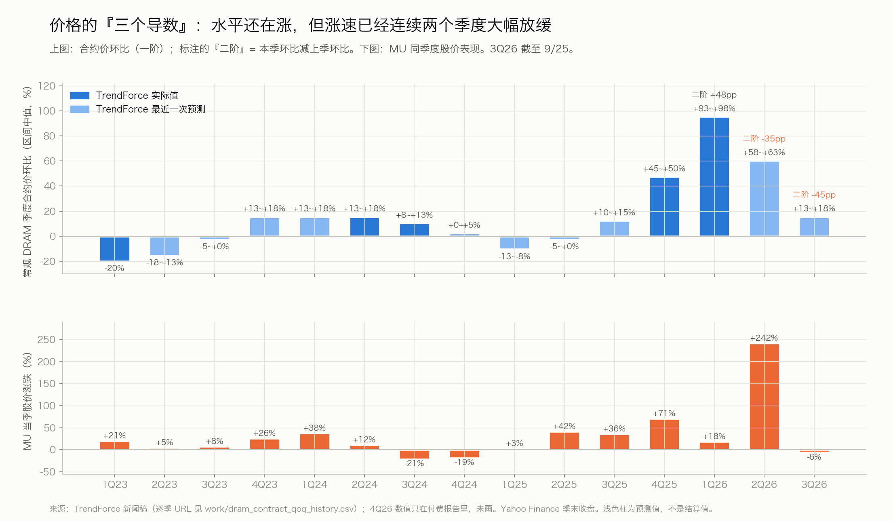
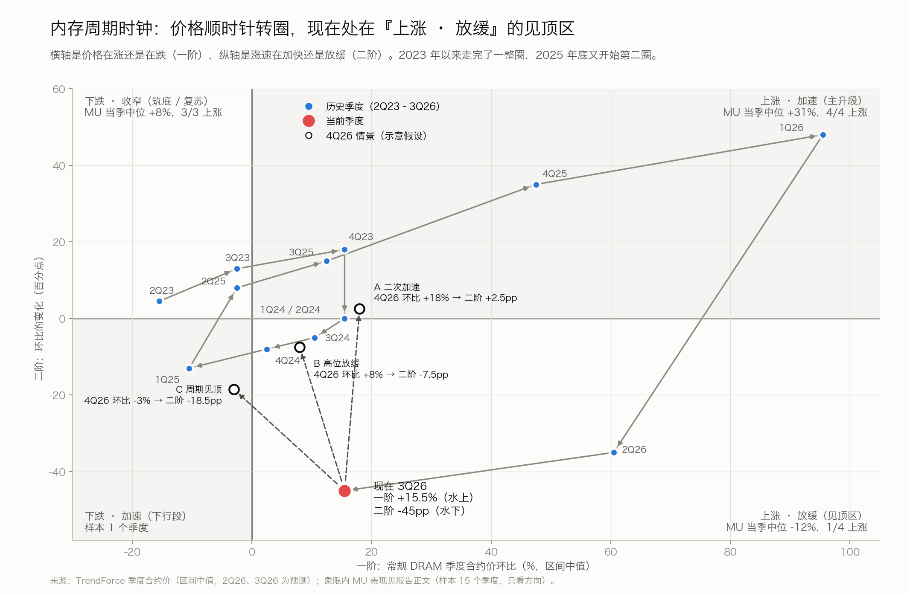
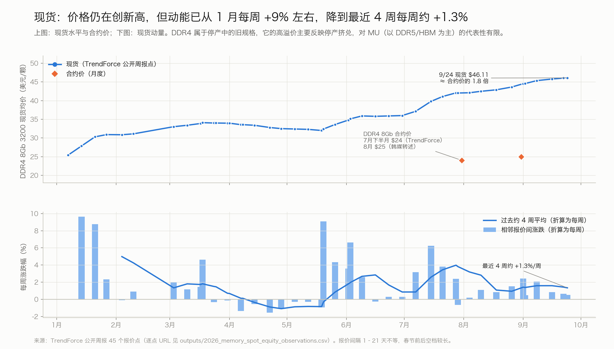
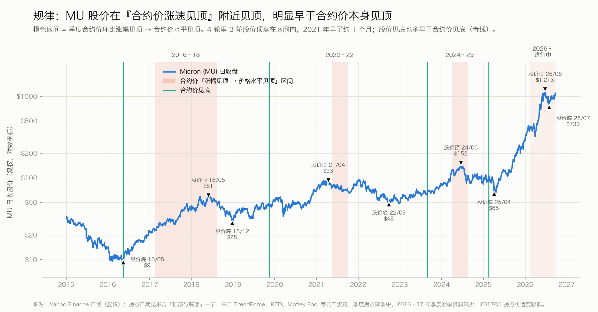
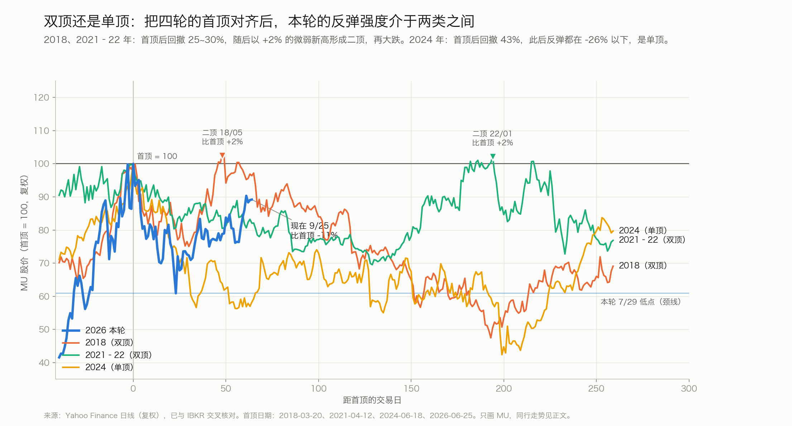
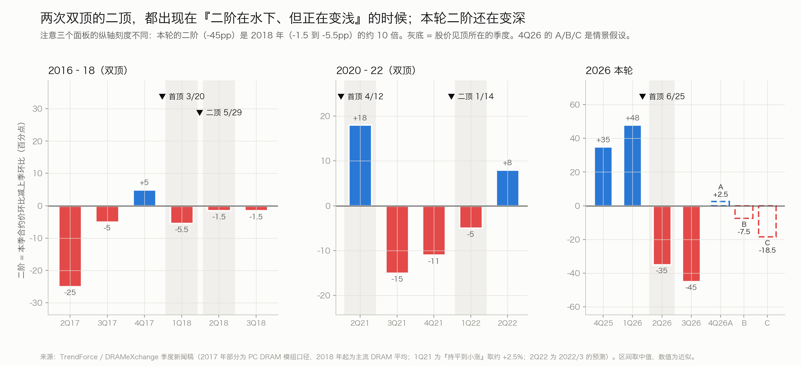
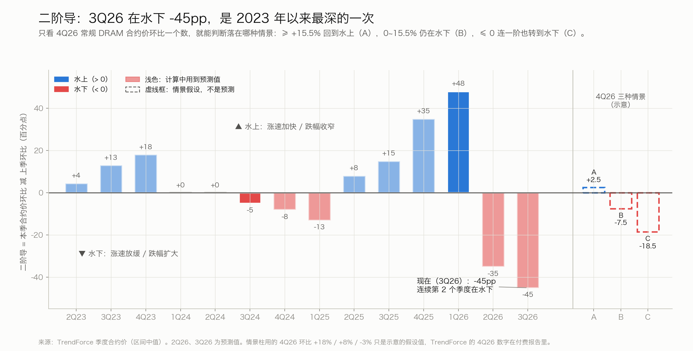

DRAM / HBM 周期研究：怎么追踪、怎么量化、现在在哪里、接下来怎么走
本文分四部分：先讲清楚内存股在给什么定价、该看哪些指标；再用美光（MU）过去三轮周期总结顶部和底部的规律；然后给出 2026 年 9 月的读数；最后给出三条可能的路径、各自的触发信号和跟踪清单。
一页结论
- 股价交易的是盈利预期的修正方向，不是价格水平，也不是已经公布的 EPS。指标之间有明确的先后：
- 合约价的涨速（二阶）领先。
- 现货是预警。
- "现货跌破合约价"确认价格见顶。
- 合约价水平和已公布的 EPS 都滞后于股价。
- 历史上股价稳定领先合约价水平见顶 2~5 个月，领先季度 EPS 峰值 3~5 个月。每次股价见顶时 EPS 都还在涨。周期顶需要两个条件同时出现：价格涨速见顶，加上盈利预期不再上调。
- 顶部是什么形态，取决于"涨速见顶"和"价格水平见顶"之间隔多久。
- 隔 1~2 个季度（2021、2024 年）：出现单顶，或者只有一次微弱的二顶。
- 隔约 6 个季度（2016–18 年）：股价中途多次回调、多次创新高，周期被拉长。
- 现在：第一个条件已经出现，第二个在松动但还没出现。
- 合约价环比涨速在 1Q26 见顶，同比涨速在 3Q26 见顶；二阶是 −45pp。
- 卖方上调盈利预测的比例从 92% 降到 77%，但整体仍在上调。
- MU 6/25 见顶后跌了 39%，按波动率调整后只相当于 2016–18 年那种中途回调。
- 现货到 9/24 还在创新高，约为合约价的 1.8 倍。这是历史上股价和现货最大的一次错位。
- 产能决定时间表。新厂 2H27 才开始爬坡，2028 年才有实质产出。所以基准情形是：现货在 4Q26~1Q27 见顶，2Q~3Q27 跌破合约价，合约价水平在 2H27 见顶。这比摩根士丹利预计的 4Q26 更晚。
- 三条路径（主观权重）：拉长型多顶约 45%，简单双顶约 30%，单顶约 25%。
- 最关键的分水岭是 9/30 美光财报之后一致预期往哪个方向改。
- 其次是 4Q26 合约价环比与 +15.5% 的比较、DDR5 现货是否见顶、SK 海力士和三星能否收复 6 月高点。
1. 股价在定价什么
整条链最后只落到一个问题上：未来几个季度，市场对盈利的预期会被上调还是下调。下面这张表把常用指标按"领先还是滞后"排好：
| 指标 | 和股价顶的时间关系 | 用法和可靠性 |
|---|---|---|
| EPS 一致预期的修正方向（未来 12 个月 EPS、上调比例） | 同步到略领先，是股价直接交易的对象 | 最核心。完整数据需要 FactSet 或 Bloomberg，公开的替代指标是卖方上调比例、指引相对一致预期的差距 |
| 合约价的涨速（环比、二阶，TrendForce 预测是上调还是下调） | 领先股价 0~1 个季度，也领先盈利修正 | 最好的领先指标。历次股价见顶前二阶都已转负，是必要条件；但 2017 年二阶转负一年后股价才见顶，所以不充分 |
| 现货价（DDR5 为主） | 和股价基本同步，前后差 1~5 个月；领先合约价 1~2 个季度 | 预警。噪音大、市场薄，本轮 4 月出过一次假信号 |
| 现货跌破合约价 | 之后 1~2 个季度合约价转跌（3 轮都是） | 确认"价格见顶"几乎够用，但对股价来说太晚 |
| 合约价水平 | 滞后股价 2~5 个月 | 只能用来确认 |
| 已公布的 EPS | 滞后股价 3~5 个月 | 只能用来确认，而且最容易误导：每次股价见顶时它都还在创新高 |
判断周期顶的两个条件：
- 条件一：价格涨速见顶，也就是合约价二阶在水下，或者同比涨速已经见顶。
- 条件二：盈利预期不再上调，也就是一致预期停止上调，或者上调比例转为净下调。
两个条件同时出现时，就是周期顶。2017 年只出现了条件一，盈利预期还在大幅上调，所以股价又涨了一年。这是本文的核心判断框架。需要说明，它是根据价格和股价的历史推出来的，还没有用一致预期的历史快照做过检验（见第 13 节）。
2. 追踪哪些价格
| 层级 | 价格 | 频率 / 来源 | 代表什么 |
|---|---|---|---|
| L1 现货 | DDR5 16Gb、DDR4 8Gb 颗粒 | 每日、每周；TrendForce 现货页免费，每周三出周报 | 边际买盘的情绪，最快，但成交量小 |
| L2 合约 | PC、服务器、手机 DRAM 合约价 | PC 按月，其余按季；TrendForce 公布季度预测，明细要付费 | 原厂营收的主体。服务器 DRAM 最接近 MU 的产品结构 |
| L3 HBM | HBM3E、HBM4，按每 Gb 或每颗计价 | 年度合约；季度 ASP 数据要付费，其余靠媒体报道 | AI 需求的核心；按年定价，所以价格反应比常规 DRAM 慢 |
| L4 实现价 | 原厂实际卖出的每 bit 售价 | 季度财报；韩国出口单价每 10 天一次，可作高频替代 | 最终落到利润上的价格，包含产品结构变化 |
不要拿 DDR4 当主指标。DDR4 正在停产，它的溢价主要来自停产前的抢货，不代表 MU 以 DDR5 和 HBM 为主的收入。现货看 DDR5，合约看服务器 DRAM，再加上 HBM 的分代价格。
3. 量化工具
3.1 价格的三个导数和周期时钟
把价格拆成三层：水平（贵不贵）、一阶（环比涨多少）、二阶（环比的变化，也就是涨速在加快还是放缓）。二阶决定了盈利预期往哪个方向修正，所以股价对它最敏感。


| 象限（1Q23–3Q26） | 季度数 | MU 当季中位数 | 上涨次数 | 包含的季度 |
|---|---|---|---|---|
| 下跌 · 收窄（复苏） | 3 | +8% | 3/3 | 2Q23、3Q23、2Q25 |
| 上涨 · 加快（主升） | 4 | +31% | 4/4 | 4Q23、3Q25、4Q25、1Q26 |
| 上涨 · 持平 | 2 | +25% | 2/2 | 1Q24、2Q24 |
| 上涨 · 放缓（见顶区） | 4 | −12% | 1/4 | 3Q24 −21%、4Q24 −19%、2Q26 +242%、3Q26 −6% |
| 下跌 · 加快（下行） | 1 | +3% | 1/1 | 1Q25（受关税冲击干扰） |
样本只有 15 个季度，多数用的是预测值，只能看方向。2Q26 是唯一的大例外：TrendForce 在 3/31 就预测当季涨速会放缓，但美光盈利大幅超预期，6/24 的指引比一致预期高约 14.7%，同时签下了长期协议，MU 当季涨了 242%。这再次说明，驱动股价的是盈利修正；二阶只是替代指标。另外，环比从 +95% 回落，二阶在数字上天然会很深。所以要用同比做交叉检验，见第 7 节。
3.2 现货：动量比价差更有用

- 价差（现货 ÷ 合约 − 1）：现货跌破合约价，是历史上最可靠的"价格见顶"确认信号。但本轮 DDR4 被停产扭曲，合约价又被长期协议压住，所以价差水平本身的信息量下降了。
- 动量：现货涨速放缓领先合约价涨速放缓；现货连续转跌领先合约价转跌。本轮更好的预警是DDR5 现货连续 3~4 周下跌，以及周报措辞从"原厂报价坚挺"变成"原厂降价、经销商抛货"。
3.3 供需平衡
3.4 盈利桥
| 情形（以 MU FQ4 指引为基准） | 影响 | 说明 |
|---|---|---|
| DRAM 售价 ±10% | EPS 每季 ±$2.9（约 ±9%） | 按 DRAM 季营收 $383 亿（Zacks 预估）、税率 15%（假设）、股本约 11.3 亿股估算，单位成本不变 |
| 售价 −10% 时 | 毛利率 86% → 约 84.4% | 毛利额 −11.6%。毛利率已经很高，利润的变动幅度和营收差不多 |
| 价格持平，出货 bit +15~20% | EPS 仍增长约 15~20% | 所以市场真正怕的不是价格不涨，而是价格下跌 |
目前的增长几乎全部来自涨价：MU FQ3 的 DRAM 售价环比 +60% 出头，出货 bit 只涨了低个位数。一旦价格转跌，EPS 会立刻跟着往下走，没有出货增长来缓冲。
3.5 估值：反推股价隐含了多大的盈利回落
周期顶部利润最高、市盈率最低，历史上 MU 在顶部只值 3~8 倍峰值盈利。所以不要直接看市盈率，而是反过来算：假设一个"正常化"市盈率，看当前股价隐含了多大的盈利回落。
| 假设的正常化市盈率 | $1,082 隐含的正常化 EPS | 相对 FQ4 年化 EPS $124 |
|---|---|---|
| 10× | $108 | −13% |
| 12× | $90 | −27% |
| 15× | $72 | −42% |
| 18× | $60 | −52% |
当前估值（stockanalysis，9/27）： MU 市值约 $1.22 万亿，前瞻市盈率 7.4 倍，对应前瞻 EPS 约 $146；市净率 12.1 倍，历史顶部只有 2.2~2.5 倍。SK 海力士和三星的前瞻市盈率约 4.6 倍。 如果 MU 的正常化市盈率在 12~15 倍，现在的股价相当于押注"跨周期平均盈利比当前低 27~42%"。过去三轮的实际回落远大于此，这是看空方的依据。看多方认为，长期协议加上 HBM 会让这次回落更浅。 另外，这一轮的盈利远高于账面价值，市净率这把尺子可能不再适用。
4. 顶部

4.1 拐点的先后顺序
| 周期 | 涨速见顶 | 现货见顶 | 股价见顶 | 现货跌破合约 | 合约价见顶 | 季度 EPS 峰值 | 股价顶到底 |
|---|---|---|---|---|---|---|---|
| 2016–18 | 2017Q1（资料少） | 约 2018 年初 | 2018-03-20、05-29 | 2018 年 6 月底 | 2018Q3 | 截至 2018 年 8 月的那一季 | −54% |
| 2020–22 | 2021Q2 | 2021-05-20（PC 模组） | 2021-04-12；二顶 2022-01-14 | 2021 年 8 月初 | 2021Q3 | 截至 2021 年 9 月、2022 年 6 月的两季 | −48% |
| 2024–25 | 2024Q1–Q2 | 没有明确高点 | 2024-06-18 | 上半年起现货已低于合约 | 2024Q3 | 截至 2024 年 11 月的那一季 | −57% |
| 2026– | 1Q26（环比）、3Q26（同比） | 尚未见顶 | 2026-06-25（阶段高点） | 尚未发生 | 尚未见顶 | 一致预期在 FY2028 | −39%（阶段） |
| 股价领先于 | 历史规律 | 本轮 |
|---|---|---|
| 合约价水平见顶 | 稳定领先 2~5 个月 | 合约价还没见顶，6/25 已经领先 3 个月以上 |
| 季度 EPS 峰值 | 领先 3~5 个月 | 如果 EPS 在 FY2028 见顶，按规律最终顶在 2027 年 |
| 现货见顶 | 不稳定：2018 年现货早 2~5 个月，2021 年股价早约 1 个月，2024 年基本同时 | 现货还在创新高，股价已经领先 3 个月以上，是历史上最大的错位 |
| 涨速见顶 | 同一季度或下一季度；2016–18 年例外，股价晚了 13~15 个月 | 下一季度 |
4.2 股价见顶时，EPS 都还在涨
| 股价顶 | 当时的 EPS | 之后的 EPS | 之后的股价 |
|---|---|---|---|
| 2018-05-29 | 还在涨（FQ3'18 非 GAAP 约 $3.15） | 再涨一季到约 $3.53，然后回落 | −54% |
| 2021-04-12 | 季度 EPS 不到 $1 | 两个季度后涨到 $2.40 | 先 −30%，二顶后再 −45% |
| 2024-06-18 | 最近一季 $0.30 | 涨到 $1.67（涨了 5 倍多），回落 16% 后 2025 年 5 月又创新高 | EPS 在涨，股价跌了 58% |
| 2026-06-25 | $24.67，FQ4 指引约 $31 | 一致预期在 FY2028 见顶 | — |
2021 年和 2024 年为 GAAP 稀释 EPS（stockanalysis 季度数据）；2018 年为非 GAAP，凭已有知识引用，没有复核。"EPS 还没见顶"是股价见顶时的常态，不能作为"还没见顶"的理由。本轮真正可能不同的地方是 EPS 预期的峰值离得很远。
4.3 三种顶部形态，由"涨速见顶到价格见顶隔多久"决定


| 2016–18 延长型 | 2020–22 双顶 | 2024 单顶 | 本轮 | |
|---|---|---|---|---|
| 涨速见顶到价格见顶 | 约 6 个季度 | 约 1 个季度 | 1~2 个季度 | 1Q26 → 基准 2H27，约 5~6 个季度（推测） |
| 首次大回撤 | −21%、−25% | −30% | −43% | −39% |
| 回撤 ÷ 顶前波动率 | 0.63、0.62 | 0.83 | 1.34 | 0.56 |
| 回撤之后 | 两次创新高，幅度 +23%、+2% | +2% 的微弱新高 | 三次反弹都停在前高下方 26~29% | 已收复约 75%，比高点低 11% |
| 最终顶时的二阶 | 水下变浅（−5.5 → −1.5pp） | 水下变浅（−11 → −5pp），一阶已转负 | 从 0 转负 | 还在变深（−35 → −45pp） |
| 现货和合约 | 最终顶 1 个月后跌破 | 首顶 4 个月后跌破 | 见顶前已低于合约 | 现货约为合约的 1.8 倍 |
规律：
- 涨速见顶和价格见顶隔得越久，顶部越宽。
- 2016–18 年供给受限，价格在涨速见顶后又涨了 6 个季度。股价中途两次回调 20~25%，每次创新高的幅度越来越小，最终顶在价格见顶前 3 个月。
- 2021 年和 2024 年两者只隔 1~2 个季度，所以是单顶，或者只有一次微弱的二顶。
- 历史上的二顶都出现在"二阶在水下、但开始变浅"的季度。市场把"放缓在缓和"当成了好转。
- 本轮的回撤要按波动率调整后再比。MU 顶前的年化波动率是 88%，大约是历史的两倍。调整后，−39% 只相当于 2016–18 年的中途回调，和今年 3 月加速期的那次回调（0.54）也差不多，远小于真正的周期顶（0.83、1.34）。
5. 底部
| 2018-12-24（复权 $28.30） | 2022-09-26（复权 $47.94） | 2025-04-04（复权 $64.56，补充） | |
|---|---|---|---|
| 合约价 | 4Q18 约 −8%；12/4 预测 1Q19 跌得更深（后来接近 −20%） | 3Q22 −10~15%；9/22 刚把 4Q22 预测扩大到 −13~18% | 1Q25 −8~13%；2Q25 预测 −0~5% 且在上调 |
| 二阶 | 约 −9.5pp，还在变深 | 约 −10pp，下一季开始变浅 | 约 +8pp，已回到水上 |
| 供给端 | 12/18 美光砍 FY19 资本开支（$105 亿 → $90~95 亿），三星、SK 海力士跟进；2019 年 3 月再减产约 5% | 9/29 FY23 资本开支减 30% 以上，设备支出减 50%；11/16 投片减约 20%，2023 年 DRAM bit 供给负增长 | 关税冲击，不是供给驱动 |
| 指引和股价反应 | EPS 指引比一致预期低约 27%；次日 −8%，4 个交易日后见底 | 营收指引从 $66 亿骤降到 $42.5 亿；次日 +0.2%，利空不再跌 | 3/20 财报次日 −8%，随后碰上关税冲击 |
| 大盘 | MU、费城半导体、标普同一天见底 | MU 比大盘早约 2.5 周见底 | MU 比大盘早 2 个交易日见底 |
| 二次探底 | 2019-06，比首次低点高 12% | 2022-12，只高 0.7%，几乎是完全的双底 | — |
| 二阶转正 / 合约价见底 | 约 3 个季度后 / 约 12 个月后 | 约 3 个季度后 / 约 11 个月后 | 当季 / 基本同时 |
底部的共同点：
- 股价在价格跌得最凶、预测还在下调的时候见底。
- 触发点是龙头砍资本开支、减投片，也就是供给开始投降。
- 盈利指引一次性下调到位，同时大盘出现恐慌性底部。
- 底部比顶部好识别，因为"砍资本开支"是一个明确的领先信号。顶部没有对称的信号：涨价时原厂只会加码扩产。
6. 现货回落有多快
| 现货见顶 | 跌破合约 | 用时 | 之后 | 驱动 | |
|---|---|---|---|---|---|
| 2018 | 约年初 | 6 月底 | 5~6 个月 | 9 月底已比合约低 10%；4Q18 合约价转跌 | 原厂库存上升，供货满足率从 90% 升到 120% |
| 2021 | 5/20 | 8 月初，已比合约低约 20% | 约 2.5 个月 | 2.5 个月跌 32%；4Q21 合约价转跌 | PC 厂商提前囤货，需求一转弱就消化库存；原厂降价去库存 |
| 2024 | 没有明确高点 | 上半年起低于合约 | — | 合约价 3Q24 仍涨，4Q24 转跌 | 模组厂和渠道 DDR4 库存偏高，三星增加供货 |
| 2026 年 3~4 月 | — | 没有跌破（假信号） | — | 现货约 −5%，中国渠道 −25~30%；5 月后再创新高 | 经销商抛出高位囤的货，合约价照样大涨 |
历史上现货快速回落，都是库存推动的，而且跌破合约后 1~2 个季度合约价就转跌。现货市场很薄，买盘一消失、库存一抛出来，价格就会迅速下跌。
7. 当前读数
| 维度 | 指标 | 读数 | 状态 |
|---|---|---|---|
| 价格涨速（条件一） | 合约价环比 | 1Q26 +93~98%（结算）见顶；2Q26 +58~63%、3Q26 +13~18%（预测）；二阶 −35pp、−45pp | ■已出现 |
| 合约价同比 | 3Q26 约 +435%，是同比的顶；4Q26 不论哪种情景都会降到 +250~330% | ■已出现 | |
| 合约价水平 | 3Q 仍在涨；TrendForce 9/24 付费报告称"上调 4Q26 展望" | ●未见顶 | |
| 现货 | 水平 | 9/24 DDR4 $46.11、DDR5 $57.67，仍创新高 | ●未见顶 |
| 动量 | 4 周平均 +1.34%/周（1 月约 +9%，7 月约 +4%）；9/16 周报称 DDR5 询价放缓、部分报价走软，价格靠原厂报价撑着 | ▲预警 | |
| 对合约的溢价 | DDR4 约 1.8~1.9 倍；DDR5 粗算 1.6~1.8 倍（用模组合约价折算，只看量级） | ●未跌破 | |
| 实现价 | 韩国 DRAM 出口单价 | 6 月每公斤 −1.7%（9 个月来首跌），8 月前 20 天 −8%；同期出货量 +21.7%，受产品结构影响 | ▲预警 |
| 库存 | 原厂 / 客户 | 原厂"极低"；美国云厂商 2Q 因 CPU 短缺局部累积 | ▲局部 |
| 盈利预期（条件二） | 修正方向 | 卖方上调比例 92% → 77%（摩根士丹利 7/24），仍是净上调；9/30 财报后见分晓 | ▲松动，未出现 |
| 股价 | MU | 6/25 收盘 $1,214 → 7/29 $739（−39%）→ 9/25 $1,082（比高点低 11%）；按波动率调整的回撤 0.56，相当于延长期的中途回调 | ○中性 |
| 同行 | 相对 6 月高点：三星 −21%、DRAM ETF −23%、SK 海力士约 −33%（周线） | ▲没有确认 | |
| 供给 | 资本开支 | 美光 FY27 超过 $450 亿（FY26 约 $270 亿）；三星加 SK 海力士为 2027~28 年四座新厂投入约 800 万亿韩元 | ▲远期压力 |
| 供给投降 | 没有 | ○离底部条件很远 |
诊断：条件一已经出现，条件二在松动但还没出现；价格水平和现货都没见顶。这是"周期后段、但还没到终局"的读数，和"股价已见顶、马上进入下行"并不一致。
8. 供需与产能时间表
| 时间 | 供给端 | 供需判断 |
|---|---|---|
| 2026 | bit 供给约 +16%（IDC），需求增速在 30% 中段；HBM 占 DRAM 晶圆约 22% | 缺货：TrendForce 估计缺 1~2%，高盛估计缺 5% |
| 2027 | SK 海力士龙仁 Y1 洁净室 2 月启用；美光 ID1 年中出第一片晶圆；长鑫从约 32 万片/月增到约 42 万片/月，主要供应中国国内；TrendForce 预计 2H27 才开始实质爬坡，bit 供给 +24%；HBM 占晶圆比例升到约 30%，继续挤占常规 DRAM | 多数机构认为缺口会扩大 |
| 2028 | 三星 P5 量产；美光 ID2 年底投产，广岛新厂 2H28 进设备 | 分歧最大：摩根大通认为供给增速会超过需求约 3 个百分点；美光说供给"逐步改善"；花旗、三星认为仍然偏紧；SK 海力士认为 2030 年以后仍是需求大于供给 |
| 2029~30 | SK 海力士龙仁 Y2 在 2029 年 6 月启用；美光纽约厂 2030 年以后 | — |
需求端：2026 年云厂商资本开支合计超过 $7,000 亿；Rubin 每颗 GPU 配 288GB HBM4，但 Rubin Ultra 可能改用 8-Hi 堆叠，HBM 容量有下修风险；消费电子在被高价挤出需求。
推论：真正能改变供需的产能要到 2H27~2028 才到位，所以价格水平更可能在 2H27 附近见顶。这比摩根士丹利"4Q26 见顶"的判断晚。用 2018 年来类比：那一轮新产能在年底投产，现货早约 9~12 个月见顶，跌破合约早约 6 个月。
9. 这一轮的特殊之处：历史模板不能照搬
- 振幅大约是历史的 10 倍，波动率是历史的 2 倍。一阶、二阶和回撤都要做标准化再比较，时间节奏也可能比以往快。
- 股价和现货出现了最大的错位。一种解释是股价抢跑了；另一种解释是现货被长期协议和原厂报价纪律托住，价格信号变慢了。
- 长期协议和预付款。美光有 16 份战略客户协议，其中 14 份有最低价，合计约 $1,000 亿，期限到 2030 年；预付款约 $220 亿，约覆盖 20% 的 DRAM 出货。这托高了盈利的下限，但也可能封住涨价空间，而且这些协议从没经历过下行周期。
- HBM 按年定价，而且正往上重新谈价。2027 年全部订满，媒体报道涨幅在 50% 以上。但 TrendForce 指出，HBM 的盈利能力从 1Q26 起已低于 DDR5 RDIMM。
- DDR4 正在停产，让现货和价差都失真。
- 需求高度集中在云厂商，资本开支又在大幅扩张。一旦 AI 资本开支进入消化期，会是类似 2022 年的外部冲击；而资本开支大增，可能让市场提前 12~18 个月交易 2028 年的供给潮。
- 韩国同行明显分化。一个可能的解释是盈利修正方向不同：美光 FQ3 大幅超预期，SK 海力士 2Q 营收低于预期。
10. 现货高于合约的状态什么时候结束
| 情形 | 现货见顶 | 现货跌破合约 | 合约价水平见顶 | 依据 |
|---|---|---|---|---|
| 基准 | 4Q26~1Q27 | 2Q~3Q27 | 2H27 | 新产能 2H27~2028 到位；按 2018 年"现货比新产能早 9~12 个月见顶"倒推。1H27 价差主要靠"合约价追、现货横盘"收窄 |
| 快速 | 随时 | 最早 1Q27 | 4Q26~1Q27 | 需求冲击（AI 资本开支消化、囤货反转、云厂商消化库存），按 2021 年节奏，现货见顶约 2.5 个月后就跌破合约 |
| 慢速 | 2027 年以后 | 2028 年以后 | 2028 年以后 | AI 需求吸收全部新增供给（花旗、SK 海力士的观点） |
这次可能比历史慢，原因有三：原厂库存极低，没有抛货的动力；长期协议把大部分产能锁住，流到现货市场的货本来就少；新产能来得晚。但现货市场很薄，4 月那次已经说明，经销商一抛货，渠道价格一周就能跌 25%。
11. 三条路径
| 路径 | 主观权重 | 价格前提 | 未来 1~3 个月会看到什么 | 股价形态 |
|---|---|---|---|---|
| 拉长型多顶（像 2016–18） | 约 45% | 基准：合约价小幅上涨到 2027 年，价格水平 2H27 见顶 | 9/30 后一致预期继续上调（条件二没出现）；4Q26 环比在中高个位数以上；现货溢价维持 | 高位宽幅震荡，按本轮波动率会有多次 30~40% 的回调，新高幅度越来越小；最终顶大约在 1H27 到 2027 年年中 |
| 简单双顶（像 2021–22） | 约 30% | 价格水平在 4Q26~1H27 见顶，或者市场提前交易 2028 年供给潮 | 4Q26 落在 0~+15.5%（水下变浅）；数字不错但一致预期不再上调，股价冲高后回落；同行不跟 | 4Q26 前后以微弱新高（约 +2%）形成二顶，然后下跌；见底要等供给投降 |
| 单顶（像 2024） | 约 25% | 快速情形：需求冲击让现货马上见顶 | 9/30 指引的售价转平或毛利率回落；4Q26 环比 ≤ 0；DDR5 现货连续下跌 | 反弹失败，高点一次比一次低 |

| 4Q26 常规 DRAM 合约价环比 | 4Q26 二阶 | 含义 | 对应路径 |
|---|---|---|---|
| ≥ +15.5%（3Q 中值） | ≥ 0，回到水上 | 涨速重新加快 | 支持拉长型，甚至突破前高 |
| 0 到 +15.5% | −15.5 到 0pp | 水下变浅，也就是历史上二顶出现的状态 | 拉长型和双顶都有可能，要看条件二：盈利预期继续上调就是拉长型中的一次冲高，不再上调就是二顶 |
| ≤ 0 | ≤ −15.5pp | 一阶也转到水下 | 单顶，或者提前进入下行 |
未来 90 天的判断规则
| 信号 | 偏拉长型 | 偏双顶 | 偏单顶 |
|---|---|---|---|
| 9/30 之后的一致预期（最重要） | 上调 FY27、FY28 EPS | 数字好，但预期不再上调，股价冲高回落 | 下调 |
| 美光指引 | DRAM 售价环比十几个百分点以上，毛利率继续上升 | 售价环比个位数到十几个百分点，毛利率持平 | 售价转平，毛利率回落 |
| 4Q26 合约价环比 | ≥ +15.5% 或中高个位数以上 | 0~+15.5% | ≤ 0 |
| DDR5 现货 | 动量回升，溢价维持 | 横盘，溢价慢慢收窄 | 连续 3~4 周下跌 |
| 同行 | SK 海力士、三星收复 6 月高点 | MU 接近前高，同行仍低 20% 以上 | MU 也跟着走弱 |
| 韩国出口单价 | 回升 | 上下波动 | 连续下跌 |
历史幅度作为参考：二顶之后跌了 45~54%，单顶之后跌了 57%，都跌破了首顶后的第一个低点（本轮是 7/29 的 $739）。从首顶到股价底用了 9~18 个月。本轮有长期协议和 HBM 重新定价托底，回撤可能更浅，但这一点没有经历过检验。现在资本开支还在扩张，离供给投降很远，所以一旦转入下行，过程可能比较长。
12. 跟踪清单
| 时间 | 事件 | 重点看什么 |
|---|---|---|
| 9/30 美股盘后 | 美光 FQ4 业绩和 FQ1'27 指引 | 一致预期：营收 $506~512 亿、EPS $31.2~31.6。重点看 DRAM 售价环比指引、毛利率趋势、FY27 资本开支、长期协议和预付款、HBM4 在 2027 年的定价；以及之后几天一致预期怎么改 |
| 10/1 前后 | 韩国 9 月进出口 | 半导体出口金额、DRAM 单价 |
| 10 月上旬 | 三星 3Q26 初步业绩（惯例时间） | 存储利润是否继续环比增长 |
| 10/10 前 | 南亚科、华邦 9 月营收 | 环比能否回升（8 月只有 +1.9%） |
| 10~11 月 | 4Q26 合约价结算 | 和 +15.5% 比较 |
| 10 月下旬 | SK 海力士 3Q 业绩；云厂商 3Q 财报 | SK 海力士的盈利修正方向；云厂商 2027 年资本开支的初步口径 |
| 4Q26 | 2027 年 HBM4 合约定价 | 涨幅是否在 50% 以上；三星、美光在 Rubin 上的份额 |
| 频率 | 要做的事 | 数据源 |
|---|---|---|
| 每周 | DDR5 和 DDR4 现货水平、周涨跌、4 周动量；周报措辞 | TrendForce 现货页（免费）、周三周报；中国渠道价格 |
| 每 10 天 | 韩国出口：半导体金额、DRAM 每公斤单价、推算出货量 | 韩国关税厅、TRASS，媒体转述 |
| 每月 | 合约价环比；现货 ÷ 合约 − 1；台湾存储厂和模组厂月营收 | TrendForce 合约页；南亚科、华邦、威刚 |
| 每季 | TrendForce 预测修正的方向（比数值更重要）；原厂售价和 bit 指引、毛利率、库存、资本开支、长期协议；一致预期修正 | TrendForce、美光、SK 海力士、三星财报；卖方 |
重跑图表：work/build_framework_charts.py（图 1、3、4）、work/build_second_derivative.py（图 2、7）、work/build_double_top.py（图 5）、work/build_top2_d2.py（图 6）。
13. 局限与数据缺口
- 2Q26、3Q26 的合约价涨幅是 TrendForce 的预测，还不是结算值；4Q26 的数字在付费报告里。四象限统计只有 15 个季度，多数用预测值。
- 2017 年部分用 PC DRAM 模组口径，2018 年起用主流 DRAM 平均；1Q21 只有"持平到小涨"的描述，取约 +2.5%；2016–17 年的季度资料少，那一轮拐点的可信度较低。
- "两个条件"的框架还没有用一致预期的历史快照做过检验；这需要 Bloomberg、FactSet 或 LSEG 的历史数据。
- HBM 价格、HBM 现货、Rubin 份额大多来自单一媒体，彼此有矛盾；DDR5 合约价是用模组价粗略折算的。
- 韩国出口单价按重量计算，受产品结构影响。SK 海力士的 Yahoo 日线在 7/30 前后有异常跳点，改用了周线。
- 2018 年 EPS 和部分历史 P/B 来自已有知识或搜索摘要，没有逐条复核。复权股价来自 Yahoo Finance，已和 IBKR 日线交叉核对。
- 路径权重是主观判断，会随 9/30 和 4Q26 的数据更新。
主要来源
- 价格（当前）：TrendForce 现货页 https://www.trendforce.com/price/dram/dram_spot ；合约价页 https://www.trendforce.cn/price/dram/dram_contract ；现货周报 9/2 https://www.trendforce.com/news/2026/09/02/insights-memory-spot-price-update-ddr5-ddr4-demand-weakens-but-firm-supplier-quotes-support-elevated-prices/ ；9/16 https://www.trendforce.com/news/2026/09/16/insights-memory-spot-price-update-dram-spot-cools-as-ddr5-inquiries-slow-2gx8-ddr4-prices-retreat
- 合约价季度：1Q26 结算 https://www.trendforce.com/presscenter/news/20260601-13070.html ；2Q26 https://www.trendforce.com/presscenter/news/20260331-12995.html ；3Q26 https://www.trendforce.com/presscenter/news/20260703-13134.html ；服务器与长期协议 https://www.trendforce.com/presscenter/news/20260709-13140.html ；4Q26 预览 https://www.trendforce.com/research/download/RP260924PL ；逐季历史见 work/dram_contract_qoq_history.csv
- HBM：年度定价、盈利能力低于 DDR5 RDIMM https://www.trendforce.com/presscenter/news/20260602-13074.html ；2027 年涨幅报道 https://www.trendforce.com/news/2026/08/25/news-nvidias-reported-15-server-hike-boosts-samsung-sk-hynix-with-hbm-prices-potentially-up-50-in-2027/ ；每 Gb 价格 https://en.sedaily.com/finance/2026/07/12/hbm4-prices-to-double-next-year-as-samsung-sk-hynix-keep ；HBM 现货 https://en.sedaily.com/finance/2026/08/31/spot-hbm-prices-hit-5-times-contract-levels ；Rubin Ultra https://www.trendforce.com/presscenter/news/20260804-13166.html
- 供需与产能：https://www.trendforce.com/presscenter/news/20260730-13158.html ；HBM 晶圆占比 https://www.trendforce.com/research/download/RP260728GY ；HBM 耗用 3 倍晶圆 https://mlq.ai/news/micron-says-hbm-uses-about-three-times-the-wafer-supply-of-ddr5-and-the-gap-is-widening/ ；2028 年可能过剩 https://www.digitimes.com/news/a20260720VL223/2028-dram-hbm-demand-sk-hynix.html ；SK 海力士判断 https://www.tweaktown.com/news/109336/sk-hynix-internal-analysis-warns-dram-supply-growth-will-be-tight-until-2028/index.html ；龙仁投资 https://news.skhynix.com/en/fab-facility-investment-2026/ ；Blocks & Files https://www.blocksandfiles.com/ai-ml/2026/05/11/dram-and-gloom-glut-cyclicality/5237714 ；美光广岛 https://www.trendforce.com/news/2026/07/06/news-micron-breaks-ground-on-hiroshima-fab-expansion-scaling-1%CE%B3-dram-and-hbm-output-as-equipment-set-for-2h28/ ；长鑫 https://www.trendforce.com/news/2026/09/24/news-cxmt-ymtc-ramp-memory-capacity-but-chinas-ai-cloud-boom-could-soak-up-new-supply-through-2027/ 、https://newsletter.semianalysis.com/p/chinas-cxmt-is-set-to-challenge-dram
- 公司：美光 FQ3 https://investors.micron.com/news/press-release/2026/Micron-Technology-Inc--Reports-Record-Results-for-the-Third-Quarter-of-Fiscal-2026/default.aspx ；业绩会讲稿 https://investors.micron.com/static-files/631b1a32-5537-46ae-8f40-82e42fc79dfe ；FQ4 日期 https://investors.micron.com/news/press-release/2026/Micron-Technology-to-Report-Fiscal-Fourth-Quarter-Results-on-September-30-2026/default.aspx ；一致预期 https://news.alphastreet.com/micron-technology-mu-q4-2026-preview-eps-est-31-56-reports-september-30/ ；SK 海力士 2Q https://www.cnbc.com/2026/07/29/sk-hynix-earnings-profit-revenue-hbm-memory.html ；三星 2Q https://news.samsung.com/global/samsung-electronics-announces-second-quarter-2026-results ；季度 EPS https://stockanalysis.com/stocks/mu/financials/?period=quarterly ；估值 https://stockanalysis.com/stocks/mu/statistics/
- 高频与需求：韩国 8 月出口 https://english.motir.go.kr/eng/article/EATCLdfa319ada/2719/view ；9 月 1–20 日 https://www.koreatimes.co.kr/economy/20260921/exports-up-78-in-first-20-days-of-sept-on-robust-chip-shipments ；DRAM 每公斤单价 https://www.trendforce.com/news/2026/08/26/news-south-koreas-dram-prices-reportedly-soar-12-5-fold-in-3-years-outpacing-gold ；南亚科 https://news.cnyes.com/news/id/6595428 ；云厂商资本开支 https://www.tmtfinance.com/intel/2026-hyperscaler-capex-tops-us700bn-analysis ；摩根士丹利 7/24 https://finance.biggo.com/news/29d1ad5a-09f4-4a2e-820a-39003cf9f046 ；2026 年 4 月现货回调 https://www.tomshardware.com/tech-industry/ddr4-spot-prices-fall-for-first-time-in-nearly-a-year-as-chinese-channel-inventory-clears
- 历史周期：2017 年 https://www.theregister.com/2017/05/18/dram_bonanza_for_top_three_suppliers/ 、https://www.dramexchange.com/WeeklyResearch/Post/2/4828.html ；2018 年 https://press.trendforce.com/press/20180514-3099.html 、https://www.trendforce.com/presscenter/news/20180813-10036.html 、https://www.trendforce.com/presscenter/news/20180926-10055.html 、https://www.trendforce.com/presscenter/news/20181204-10078.html ；2019 年 https://www.trendforce.com/presscenter/news/20190121-10096.html 、https://www.trendforce.com/presscenter/news/20190219-10103.html 、https://www.trendforce.com/presscenter/news/20190528-10140.html ；2021~22 年 https://www.trendforce.com/presscenter/news/20201210-10590.html 、https://www.techpowerup.com/281231/dram-prices-projected-to-rise-by-18-23-qoq-in-2q21-owing-to-peak-season-demand-says-trendforce 、https://www.trendforce.com/presscenter/news/20210713-10858.html 、https://www.trendforce.com/presscenter/news/20210810-10890.html 、https://www.trendforce.com/presscenter/news/20210922-10947.html 、https://www.trendforce.com/presscenter/news/20211213-11050.html 、https://www.trendforce.com/presscenter/news/20220328-11175.html 、https://www.trendforce.com/presscenter/news/20220922-11391.html 、https://www.trendforce.com/presscenter/news/20230109-11533.html ；2024 年 https://www.trendforce.com/news/2024/05/22/insights-memory-spot-price-update-dram-price-down-again-due-to-chip-supply-increase-led-by-samsung/ 、https://www.trendforce.com/news/2024/07/17/insights-memory-spot-price-update-dram-prices-continue-to-rise-as-samsung-supports-the-momentum/ ；美光减产 https://blocksandfiles.com/2018/12/19/microns-quarterly-revenue-growth-terminates/ 、https://siliconangle.com/2022/09/29/micron-slash-spending-new-chipmaking-gear-50-counter-unprecedented-oversupply-problems/ 、https://www.streetinsider.com/Corporate+News/Micron+Technology+(MU)+to+Cut+DRAM+and+NAND+Wafer+Starts+by+20%25/20861249.html ；拐点明细见 work/memory_cycle_turning_points.csv
本报告是市场研究材料，不构成投资建议。股价为价格回报，不含股息；各数据口径以原始来源为准。